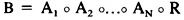

by Abraham Kandel
CRC Press, CRC Press LLC
ISBN: 084934297x Pub Date: 11/01/91
|
|
Fuzzy Expert Systems
by Abraham Kandel CRC Press, CRC Press LLC ISBN: 084934297x Pub Date: 11/01/91 |
| Previous | Table of Contents | Next |
Formulating the problem we are going to work on, we first specify the universes of discourse. As mentioned in Section I., the model has inputs (conditions) defined in input spaces (subcondition spaces) denoted by A1, A2…,AN. We assume that they have finite cardinality and denoted by:
The same holds with the output space (action space) denoted by B and consisting of a finite collection of elements of cardinality m, namely B = {b1, b2,…,bm}. All the fuzzy sets Aj: Aj → [0,1], j = 1,2…,N, describing inputs and output, will be denoted using capital letters and the relationship between them are modeled by a fuzzy relation R defined in the Cartesian product of the set Aj and B, R: A1 × A2 × … × AN × B → [0,1]. Then the output and inputs are interrelated, and these ties are given in the form of the fuzzy relation equation:3

)
Figure 1 The Fuzzy Relation
that, in terms of membership functions, read accordingly:
for any k = 1,2,…,m, where and are the min and max operators of [0,1].
A reduced form of the model Equation 1 is put down as a formula for single input-single output model. For the jth input variable, j = 1,2,…,N, this is given by:
where G is a fuzzy relation defined in Aj × B, G: Aj × B → [0,1], cf. Figure 1.
Here we denote the output by instead of B underlying that the reduced form of the model may not, and usually does not, generate the same output, namely B. Of course, we intend to determine such fuzzy relation G which allows to obtain the closest results to B. In an ideal situation, we can ask to satisfy an equality despite which values of inputs are considered. In more formal fashion, choose such G that the equality:
is satisifed for any j = 1,2…,N and for any fuzzy set Aj.
Unfortunately, the previous requirement is too restrictive and the equality that has to be fulfilled for every fuzzy set Aj is even difficult to verify. Therefore, it is reasonable to speak about the model equivalence in Equations 1 and 3 in the sense of an assigned class of inputs. More clearly, we say that the fuzzy models are equivalent with respect to the class of inputs X if the equality of the latter equation holds for any fuzzy set Aj, j = 1,2,…,N, of X, X being an assigned class of inputs.
In the sequel, for simplicity, we put so that no misunderstanding can arise. Two classes X of inputs are of a significant interest:
Of course, in both cases, Equation 2 is viewed as a system of nj fuzzy equations, whose solution set is assumed nonempty.
Denoting by 1 the fuzzy set with the membership function equal identically to 1 and by  , and G, the fuzzy relations resulting in (i) and (ii), the formulas for the membership functions of and G are contained in the following propositions, respectively.
, and G, the fuzzy relations resulting in (i) and (ii), the formulas for the membership functions of and G are contained in the following propositions, respectively.
Proposition 1—If the inputs of the Equation 1 are specified as follows:
 are singletons and such that they are disjoint and completely cover Aj (i.e., their fuzzy union has the membership function equal identically to 1.0),
are singletons and such that they are disjoint and completely cover Aj (i.e., their fuzzy union has the membership function equal identically to 1.0),
Proof—According to the assumptions made in the statement, we have the following membership function for the output:
Since Aj, t = 1,2,…nj, are nj singleton fuzzy sets, i.e., we have if ij = t and otherwise, then the membership function of Bt simplifies into:

for any t = 1,2,…,nj, k = 1,2…,m. Bearing in mind the properties of the fuzzy sets defined in  and performing computations for any t = 1,2,…,nj, we have the following input-output fuzzy sets of the reduced model:
and performing computations for any t = 1,2,…,nj, we have the following input-output fuzzy sets of the reduced model:
In accordance to Reference 4, a solution (the greatest) of the system in Equation 2 is obtained realizing the composition7 of these fuzzy sets and, hence, their fuzzy intersection. Thus, we have:
Here 1 denotes the membership function equal identically to 1.0 in the entire space B. The result formulated in the proposition follows of course from Equation 4.
Similarly, it is proved that:
Proposition 2—If the nj input fuzzy sets , t = 1,2,…,nj, are singletons and such that in every universe of discourse Aj, j = 1,2,…,N, they are pairwise disjointed and completely cover Aj, (in the sense of proposition 1), then the fuzzy relation G of the reduced model (2) is given by:
for any ij ∈ Aj, bk ∈ B, ij = 1,2,…,nj.
| Previous | Table of Contents | Next |